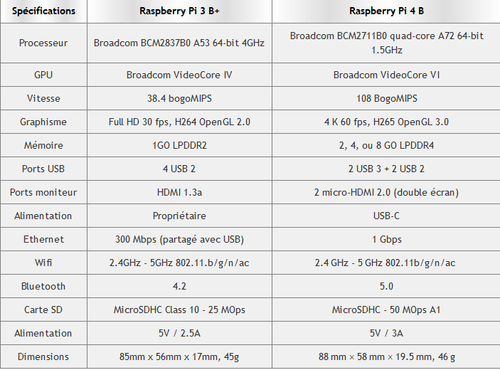

Blian de Compétence
Voici un bilan des compétences que j'ai acquéri durant mes 2 années de formation au sein de l'équipe de la DISP de Strasbourg et mon cursus scolaire à la CCI.
Tableau | Attestation employeur
Voici les missions que je vais vous présenter
Analyse et Réalisation d'une Station blanche
cliquer ici pour télécharger le document relatif à cette mission
Traiter les demandes liées aux postes utilisateurs
cliquer ici pour télécharger le document relatif à cette mission
Référencement des postes dans un applicatif
cliquer ici pour télécharger le document relatif à cette mission
Assitance utilisateurs
cliquer ici pour télécharger le document relatif à cette mission
Mes Projets
Mon portfolio
Un portfolio créer pour le projet du 1er semestre de mon BTS SIO à la cci
- HTML
- SCSS
- JavaScript
Application Mobile | trouver un film selon votre humeur
Une Application faite pendant le 4eme semestre de mon BTS SIO
- ReactNative
- js
Cliquer ici pour télécharger les documents relatif au projet

Station Blanche
Une station blanche faite dans le cadre de mon stage lors de mon cursus de mon BTS SIO
- Python
- PyQT
- Bash
Cliquer ici pour télécharger les documents relatif au projet
Veille Technologique
Le Raspberry Pi est un ordinateur sous architecture ARM conçu par David Barben dans le cadre de sa fondation (The Raspberry Pi Foundation). La cible initiale de cet ordinateur à bas prix pensé par les membres de la fondation sont les écoles des pays en voie de développement et les utilisateurs désireux de développer à moindre coût. Cette petite machine peut être alimentée par une prise USB et est assez petite. Nous pouvons imaginer proposer cela aux startup qui n’ont pas beaucoup de place pour des unités centrales (en fixant par exemple la Raspberry-Pi derrière le moniteur) ou en l’utilisant comme serveur sous Linux (avec comme OS Raspbian). Cette machine peut également être proposée aux particuliers, en effet, pour l’utiliser comme serveur multimédia (simple d’utilisation et convivial)
Ses caractéristiques:
Voici les caractéristiques des 2 derniers Raspberry Pi. Vous pouvez cliquer ici pour voir un comparatif de tout les Raspberry Pi.
Utiliser un RaspberryPi
Il y a des centaines de façon d'utiliser un Raspberry. DU fait de sa petite taille, légèreté, il est facile à transporter de partout dans une poche. De la simple utilisation dans un réseau en tant que client à la création d'un robot télécommandé, tout est possible avec cette technologie. Voici quelques exemples:
- Un module pour ouvrir sa porte de garage à la voix (grâce à SIRI)
- Un serveur SqueezeBox (Logitech Media Server)
- Une alarme pour votre domicile.
- Une borne d'arcade MAME.
- Un outil de surveillance du trafic routier.
- Un cadre photos numérique.Un module pour piloter ses guirlandes de Noël.
- Un serveur web (un serveur LAMP).
- Un distributeur de tickets.
Ceci n'est qu'une petite liste des diverses possibilités qu'offre cette technologie. Le Raspberry est une technologie incroyable qui plait aux utilisateurs du fait de son faible coût d'acquisition et de sa taille. De plus, plusieurs entreprises commencent à l'intégrer au sein de leur structure et n'hésitent pas à le proposer à leur clients. Intuitif et facile d'utilisation, cet appareil convient aux utilisateurs novices comme aux plus aguerris.
Les périphériques:
Des boîtiers adaptés à la carte mère (dont certains sont originaux) sont disponibles sur la plupart des sites commercialisant le Raspberry Pi. Au niveau du chargeur, un simple chargeur de smartphone (micro-USB vers USB) convient parfaitement pour alimenter la carte jusqu'au RasberryPi 4 ou un chargeur usb type C convient pour l'alimentation. En utilisant la prise USB, on peut connecter de nombreux périphériques : disques durs externes, lecteur Blue-ray, clef wifi, webcam, imprimante... Pour aller plus loin, les ports d'entrées sorties série peuvent permettre l'interfaçage avec d'autres circuits électroniques (robots...).
A Propos de moi
Je m'appelle Evan et j'ai 19 ans, je suis actuellement apprentie à la Direction Interrégional des Services Penitentier de Strasbourg et suit un cursus dans le BTS Services Informatiques aux organisations (SIO). De nature curieux et ayant toujours aimé manipuler un ordinateur, j'ai décidé de me lancer dans un BTS SIO suite à un BAC S. Cette formation en alternance m'a permis d'acquérir beaucoup de compétence techniques, apprendre à travailler seule et en équipe et surtout de m'intégrer petit à petit dans le monde professionnel.
Voir mon CV